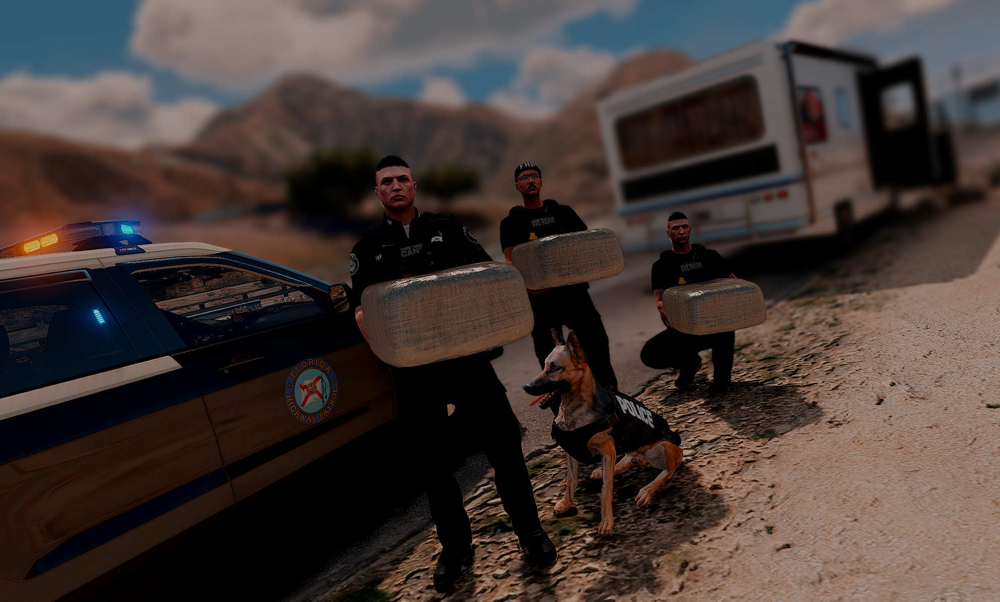
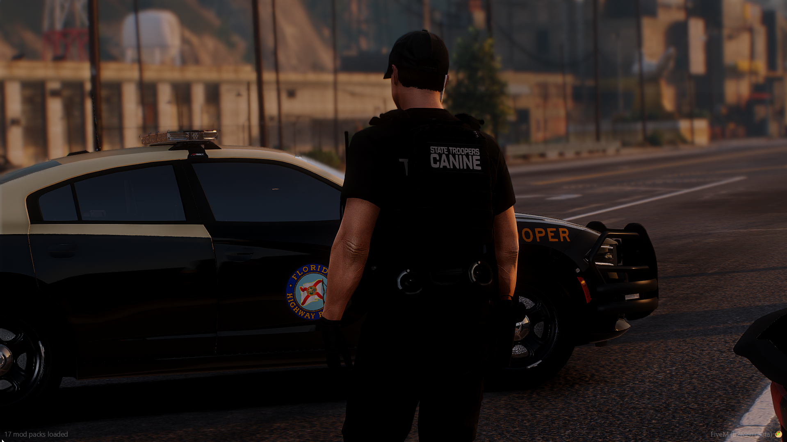
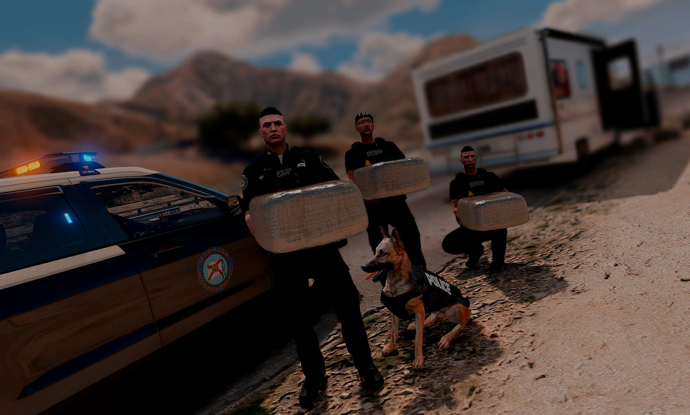
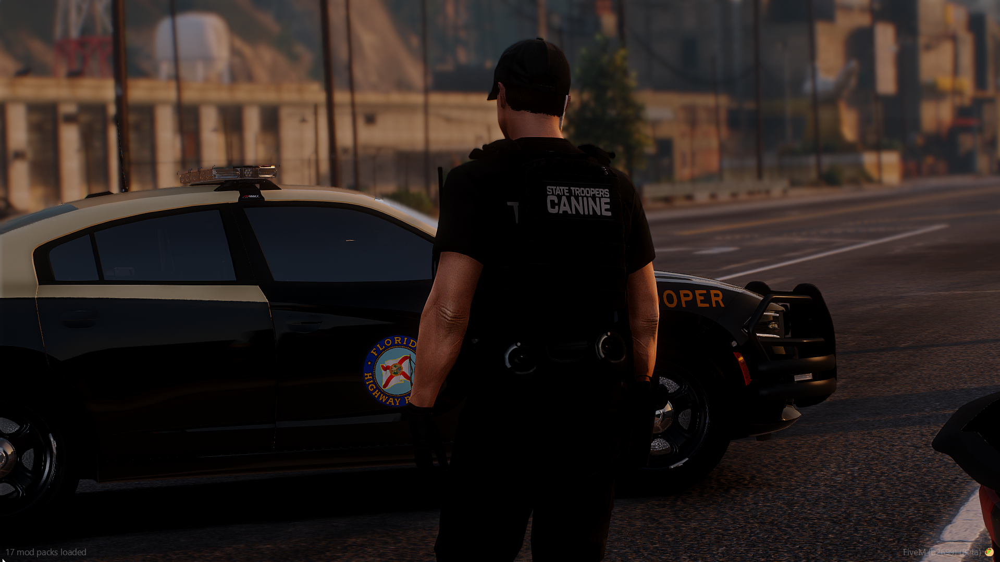

The Criminal Interdiction Unit (CIU) consists of specially trained troopers designated as felony officers and canine handlers. These troopers are strategically assigned throughout the state to patrol the interstate system and other highways in order to interdict drug couriers and other criminal activity. The CIU assists other federal, state, and local law enforcement agencies in the detection and apprehension of drug traffickers and other criminal offenders that utilize the roadways of Florida. The CIU is an active participant in various enforcement operations coordinated by the Florida Office of Drug Control. The CIU is equipped with sophisticated drug detection equipment such as fiber optic scopes, drug detection devices, electronic measuring devices, dual-purpose canines, and various other tools. In 2024, the FHP CIU seized 3,061 pounds of marijuana, 336 pounds of cocaine, 2.1 pounds of heroin, 434 pounds of methamphetamine, over $2 million dollars in U.S. currency and more than $279 million dollars in total seized contraband. Another 567 pounds of other types of illegal drugs, and prescription medications were seized during this period. Troopers also seized over 200 weapons. These seizures resulted in 948 persons arrested and 2,122 felony charges.
 


